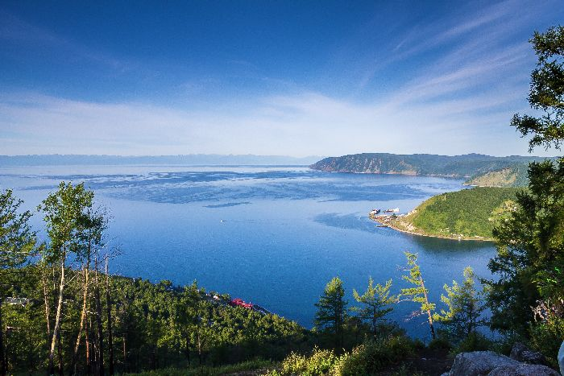

«Родники горы Весёлой» ( среди которых «Худяковские родники», «Евсеевский ключ», источник «Серебряный») являются месторождением природной питьевой воды. Эти водные источники располагаются на территории Иркутской области в нескольких километрах от села Пивовариха. В 1981 году этим водным ключам присвоили статус государственного памятника природы. На сегодняшний день «Родники горы Весёлой» - постоянно действующие источники питьевой воды, находятся под охраной Ангарского лесхоза. Вода в них является пригодной для питья. В ее состав входит кремний, благодаря которому в организме человека происходит расщепление шлаков, вывод камней, песка, то есть происходит естественное очищение организма от вредных веществ, а также укрепляется иммунная система. По словам медиков, такая вода особенно полезна людям, которые проживают в зонах с повышенной радиацией. Именно поэтому сюда за водой приезжают не только жители соседних сел, но и жители самого города Иркутска. Другими словами, вода «Родников горы Весёлой» имеет массу целебных свойств для организма человека.
Исток реки Ангары
Исток реки не замерзает, несмотря на то, что сам Байкал затягивает льдом. Просто в Ангару вода втекает не с самой поверхности озера, а с глубины 60-80 метров, где температура воды конечно выше 0°С, плюс быстрое течение. Видимо поэтому, сюда на зимовку прилетают водоплавающие птицы, т.е. для кого-то юг находится на Ангаре. Исток Ангары, особенно на перекатах, - мощная фабрика донного и внутреннего льда. Интенсивность данного бывает так велика, что дно реки и все предметы на нем покрываются ледяной коркой.
Карстовые источники – воклюзы
Наряду с исчезающими реками известны и вытекающие из карстовых пустот источники, получившие название воклюзы или сифон-источники. Воклюзы отличаются значительным водяным дебитом и непрерывностью стока. В сутки из крупного воклюза может вытекать до 90 тысяч кубических метров воды! В России известно несколько крупных воклюзов: на Алтае, в Чингизских горах и в районе хребта Каратау. Самый глубокий воклюз в мире находится во Франции в департаменте Воклюз. Глубина этого карстового источника 255 метров.
Бухта Песчаная
Бухта Песчаная имеет форму полукруга, на обоих концах которого два высоких конусовидных гранитных мыса серого цвета - с юга Малая Колокольня и с севера Большая Колокольня высотой 105 метров над уровнем озера. Берег бухты занят чудесным чистым песчаным пляжем из кварцевого песка, длина пляжа - 750 метров, а ширина - 15-20 метров. Особую притягательность придает бухте удивительное разнообразие рельефа: знаменитые скальные мысы, пещерки и ниши в береговой полосе, выступы, башни, скальные крепости на склонах Приморского хребта и даже сложные сооружения в виде скал Шляпа и Будда. Бухта Песчаная с давних времен посещалась человеком. Здесь обнаружены стоянки каменного века с нефритовыми тропами, глиняной посудой, орудиями рыболовства и охоты. Сейчас Песчаная застроена достаточно хаотично примитивными сооружениями туристской базы. По разные стороны от турбазы размещаются лагеря туристов.
Мыс Дыроватый
Мыс Дыроватый представляет собой скальное образованием в виде берегового мыса-утеса, которое сформировалось в результате тектонического сброса и под действием волн и процессов выветривания и разрушения биотитовых гнейсов таланчанской толщи архея, образовался сквозной проем.
Кайская роща
Кайская роща — единственный в Иркутске массив реликтовых, то есть появившихся без участия человека лесов. Преобладающие породы деревьев — сосна, лиственница, тополь, клен, черемуха, берёза, ель. Роща знаменита своими ручными белками. На территории рощи, а также возле расположенного неподалёку от рощи парка Парижской коммуны, рядом с устьем реки Каи и около железнодорожного моста через реку Иркут, в 1924 обнаружены следы стоянки человека эпохи неолита и верхнего палеолита — Глазковский некрополь. Возраст захоронений — от 7 тысяч лет до 35 тысяч лет (эпоха верхнего палеолита). Около половины северной части Кайской рощи занимает санаторий «Ангара», на его территории проложены асфальтированные дорожки для прогулок. Депутаты думы Иркутска 1 декабря 2011 присвоили Кайской роще статус особо охраняемой природной территории. На территории рощи запрещена всякая хозяйственная деятельность, в том числе строительство жилья и других зданий. Землю на территории Кайской рощи, на которой уже ведется строительство, не стали включать в особо охраняемую зону, однако на прилежащих к роще участках должны соблюдаться условия буферной зоны, находящейся в непосредственной близости от охраняемого объекта.
Шаман-камень
Многие люди знают чудесную легенду о появлении этого камня, которым старик Байкал пытался преградить путь своей своенравной и прекрасной дочери, тайно убегавшей к красавцу Енисею. Легенду знают многие, но мало кто осведомлён в том, что камень славен не только и не столько этим легендарным прошлым, но и тем, что служил культовым пристанищем для молитвенных обрядов бурятских шаманов. Не менее интересно то, что он был своего рода «клятвенным» местом, на которое отправляли людей, которых подозревали во лжи или измене, особенно в этом плане «везло» неверным женам. Считалось, что человек, высказывающий неправду, обязательно будет наказан за свой грех на этом камне. В хорошую погоду можно увидеть только лишь верхушку Шаман-камня, выступающую над поверхностью воды на 1-1,5 метра. Это связано с тем, что после строительства Иркутской ГЭС уровень воды в истоке Ангары поднялся. В 1958 году от представителя московского «Гидроэнергопроекта» Н.А. Григоровича поступило предложение взорвать Шаман-камень, подложив под него 30 тысяч тонн аммонита. По мнению инициатора идеи, это позволило бы углубить русло вытекающей из Байкала реки до 25 метров и, тем самым, выпустить из озера 120 кубических километров воды для увеличения производства электроэнергии на Иркутской ГЭС. При реализации такого замысла была бы полностью оголена прибрежная полоса озера в 100-120 тысяч гектаров, являющаяся зоной жизни для всей флоры и фауны Байкала, должны были исчезнуть основные нерестилища рыб. Ущерб, нанесенный только рыбной промышленности Бурятии, выразился бы в сумме свыше 2 млрд. рублей в ценах тех времен. Во многих местах береговая линия должна была отступить на километр и более, населенные пункты — лишиться источников водоснабжения, а огромные пространства лугов и пастбищ на восточном побережье Байкала превратиться в зону полупустыни. К счастью, от этого проекта отказались.
Два брата
"Два брата" — гранитная двухвершинная скала, между трещинами в которой видны выходы маслянистой жидкости. Высота скал достигает 50 метров, высота над уровнем моря — 300 метров. Расположена на берегу озера Байкал на склонеПриморского хребтав полутора километрах к югу от поселка Большие коты. Скала имеет вид плоских башен, разделенных небольшим распадком. С вершин скал открывается хороший обзор. Сами скалы также хорошо видны как с берега и береговой тропы, так и с воды или льда озера. Окружающая скалы местность нуждается в особом внимании и заботе, поскольку как памятники природы скала "Два брата" может иметь ценность только в комплексе с окружением.
Мыс Арка
Мыс Арка – расположен в 15 км к северу от бухты Песчаной, представляющий собой обломок скалы в виде трапециевидной арки уходящей в воду и мыс Хобой. Мыс Арка представляет собой скалу, напоминающую при одном ракурсе слона с опущенным в воду хоботом, при другом — серую черепаху, жадно глотающую воду, при третьем — это и вовсе внеземное животное. Такая необычайная форма образовалась в результате выветривания и разрушения кристаллических горных пород под влиянием физико-химических процессов и воздействием волн. При высокой воде под «хоботом» образуется достаточно пространства, чтобы проплыть на лодке. Издалека мыс похож на стрельчатое сооружение готических форм высотой с 4-этажный дом, напоминающее пролет римского или средневекового моста массивной кладки, что и послужило основанием для такого названия — Арка.
Утес Скрипер
Утес Скрипер на западном побережье Байкала к северу от п. Большие Коты – один из мощных выходов юрских конгломератов с живописными формами выветривания и небольшими пещерами со следами неолитической стоянки людей. Утес разделяет две пади, которые носят название Большие и Малые Коты. Его отличают нестандартные формы выветривания для земель Байкала, а также необычность горных пород, из которых соткан мыс. Всесторонне нависают стены из камня, поделенные глубокими и узкими ущельями, а также выступают каскадами скалы, высятся остриями гребни гор. Массив Скрипера состоит из редкой для Байкала породы – юрского конгломерата, песчаного и обкатанного разнокалиберной галькой. Это довольно хрупка я порода, скалы, сложенные ей, легко ломаются – немаловажная деталь для любителей скалолазания. На отвесной части скалы находится вход в пещеру, в которой ученые в свое время нашли неолитические стоянки древних людей. В общей сложности, длина всех ходов в пещере составляет около 14,2 метров. Сама пещера находится на высоте 200 метров над уровнем озера.
Пещера «Часовня»
Одно из основных достоинств пещеры – легкодоступность для всех желающих ее посетить. Но так было не всегда. Пещера находится в пади Малая Кадильная, расположенной на высоте от 50 до 300 метров над уровнем озера на земле Прибайкальского национального парка. История сооружения цивилизованного подхода к памятнику природы – еще одно свидетельство того, что добровольческая деятельность – это не только форма экологического туризма, но и реальный вклад в дело охранения Байкала и окружающей его неповторимой природной среды. Карстовая известковая полость, пещера «Часовня» удалена от человеческого жилья, но желающих посетить ее было более чем достаточно, несмотря на то, что забираться приходилось по крайне сложному склону. Дорога к «Часовне» идет по местности, где основная порода – известняки, и уже сама по себе сыпучая тропа не позволяла стоять на ней устойчиво. Склон быстро разрушался. Неконтролируемое число желающих добраться до спелеологической достопримечательности прокладывало новые пути, держась при этом за траву и кустарники. Красиво цветущие виды и пышные травы вырывались, почва вытаптывалась, началось активное разрушение, что объективно угрожало оскудением всей экосистемы. И как результат – склон сильно обсыпался и потерял свой естественный растительный покров, а также стал просто опасен для туристов.
Кедр «Мужество жизни»
«Мужество жизни»— памятник природы, охраняемый государством, о чем свидетельствовала табличка, укрепленная на скале. Кедр находился на скале высотой около 6 метров и снизу казалось, что он растет прямо из камня. В 1998 году во время своего первого байдарочного походая останавливался на ночевку вблизи этого кедра, и уже тогда мне показалось, что дерево начало желтеть. При следующей встрече, в 2001–м, сомнений уже не было— кедр был мертв… Табличка стыдливо исчезла. Кедр Мужество жизни близ бухты Внучка рос на скале Большая Колокольня и является редким примером приспособления растений к несвойственным им и неблагоприятным условиям жизни.